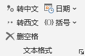
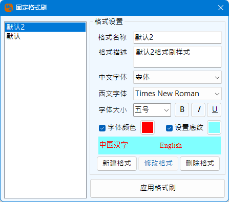

，可以调出设置界面：
，可以调出设置界面：Ribbon菜单Word 格式助手中如下图所示部分可进行文本格式的操作：
此功能可以将选中文本中的西式（半角）标点符号转化为中式（全角）标点符号。中式（全角）标点符号有，。：；（）［］｛｝＜＞？!～ ；西式（半角）标点符号有,.:;()[]{}<>?!~，它们一一对应，通过本功能相互转化。并且这些标点分为三组，可以分别设置为转换目标或者忽略。点击功能区右下角的小箭头，可以调出设置界面：
在界面中设置忽略数字后的句点符号，可以避免在转换时将数字小数点转换为空心句号。本界面还可以设置其他文本格式功能。设置界面可以保留不关闭，也可关闭，选择都生效，但关闭Word程序后再次打开，设置将重置。
此功能可以将选中文本中的空格删除。通过上述界面设置，该功能也有三种模式：一种式删除所有空格；二是删掉除英文单词之间的空格之外的其他所有空格；三是仅删除特定的标点符号（，。：；、！？）之后的空格。
此功能可以插入当前日期，或根据选项插入带空位的日期，例如：“2023年 月 日”。
此功能可以为选定的文本添加括号、引号或书名号等。对于括号类型的符号，可以通过设置确定使用全角符号还是半角符号；如果选择替换现有括号，且所选择的内容首尾为符号对时，将产生替换效果。
当选择内容为阿拉伯数字的时候，可将其转换为人民币大写的形式，例如选择：5888.88，则转换后的结果为：伍仟捌佰捌拾捌元捌角捌分。最大可到万亿单位，最小为小数点后三位。当结尾为元，无角分厘单位时，将自动添加整字结尾。例如选择：259.00，则转换后的结果为：貳佰伍拾玖元整。当选择的内容无法被转换为正确的数字时，输出结果将提示错误，通过Word的撤销操作可以恢复原来的文字内容。
该功能可以快速为所选段落设置2字符的缩进，或者移除当前的缩进（注意，空格不属于缩进，不能被移除，请使用删除空格功能）
该功能在当前选择区域内删除空行，空行指仅有回车符的行。
该功能支持保存多个设置的格式，可以任何时候直接使用该格式刷刷新格式，而不需要再去选择源格式文本。格式可以保存到本地硬盘，重新开启Word程序时，之前保存的格式仍然生效。该功能格式支持中文、西文字体名称，字体大小，样式，文字颜色，底纹颜色几类设置。
通过下拉按钮可以调用格式设置界面如下：
左侧列表框内罗列了已经保存的格式，初始使用时自动生成一个默认的格式，可以通过右侧的格式设置进行更改，每次完成更改必须点击修改格式修改当前选中格式或者新建格式创建一个新格式，否则格式将不会保存至本地。格式名称可以重复，但不可为空。删除格式可以删除任一格式，但必须保证至少还剩1个格式样式。
格式中字体颜色、底纹设置为选项，当不勾选时，格式刷不修改原文本的文本颜色或底纹。
当前选择的格式样式即为格式刷所应用的格式，点击应用格式刷按钮功能与Ribbon中的定格式刷按钮功能一样，即使不开启该界面。该选择同样保存至本地，下次开启Word也将使用上一次的选择。
该功能组包括平方上标、立方上标、数字上标、数字下标以及自定义上下标机项功能。其中平方上标、立方上标均针对类似m2、mm2或者m3、mm3这样的情况，快捷的将2或者3字符改为上标格式。而数字上标、数字下标则将所有数字都按照上标或下标的格式进行设置。
对于更复杂的引用，可以打开上下标格式对话框，支持正则表达式匹配，将匹的类容设置为上标或者下标。
对话框下方罗列了常用的正则表达式匹配，可以根据需求设定更复杂的匹配规则，实现批量操作上下标设置。
使用上述功能的提示及注意事项：
该功能用于批量标注拼音、删除拼音以及修改拼音格式。拼音标注使用了第三方的拼音库文件，与word本身的拼音库并不相同。
本设置界面中，对齐方式、字体、偏移量以及字号均与word自带的拼音功能一致。字与词的界定，由Word程序给出。由于标注拼音本身是一项耗时工作，本程序提供了异步进度显示以及取消功能，避免程序长时间工作造成假死状态。用户可以根据需要取消操作。
标注拼音，该功能通过拼音域的方式标注拼音，与Word本身的拼音标注功能相同。该功能采用设定的拼音格式进行标注，允许确认多音字，当根据拼音库确认标注范围存在多音字时，右侧的多音字校正面板将会生效，用于选择不同的读音。
删除拼音、统一格式，仅针对使用拼音域标注的拼音。
直转拼音用于将中文字直接替换为拼音文字，当选择为逐字标注时，拼音之间以空格隔开，选择为逐词标注时，词间以空格隔开，词内拼音无空格。本功能不采用拼音格式中的对齐、偏移、字体和字号，但是大小写、声调模式依然生效。
插入韵母声调功能仅针对将文字替换为拼音后，手动在指定的位置插入带音调的拼音字符，方便修改。
本程序注音操作支持Ctrl多选模式
使用拼音功能特别说明：
该功能可将选定的图形或者自由曲线图形转换为云线圈。该功能仅对内置的自动图形以及手绘的多段线、自由曲线生效。云线的形状控制通过2个参数，一个是云圈半径用于控制每个云圈的大小，另一个是距离系数控制两个云圈的靠近程度，0相当于云圈重叠，1相当于两个圆圈相切，因此系数取值0.1~1.0，注意：云线遵循顺时针方向左侧生成的原则，一个自由绘制的线条，如果是顺时针绘制，则生成的云圈在外侧，如果是逆时针绘制，则生成的云圈在内侧。
选中文档中一段表达式，通过该功能可以直接将表达式的结果值计算出来，通过信息框展示答案，如果需要可以将结果值替换表达式。